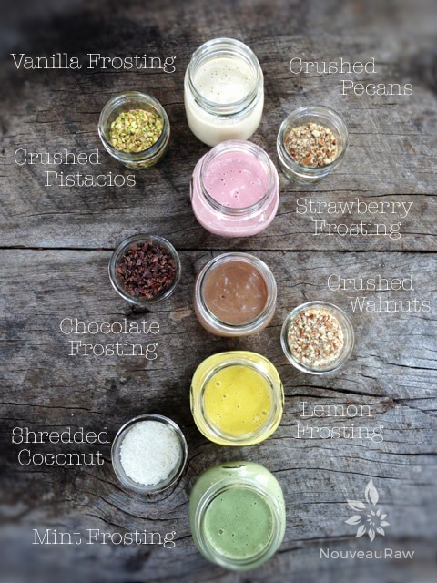
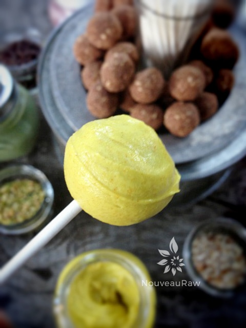
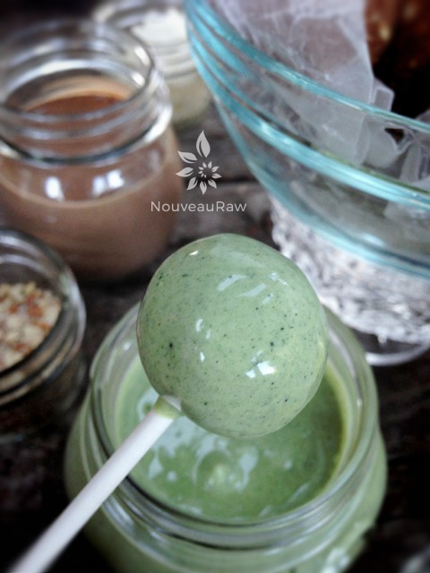
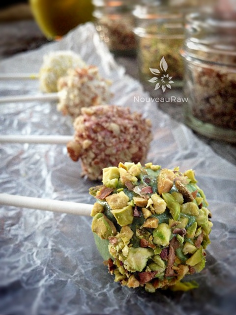

Chocolate Cake Pops served Fondue style
~ raw, vegan, gluten-free ~
Bite-sized perfection… all rolled into a ball and dipped in a frosting fondue! Your guests will love the taste, and you will love this treat, even more, knowing that you are serving a healthy dessert without anyone being the wiser!
Fondue dipping can add a lot of fun to any gathering. This won’t be the typical “warm sauce” fondue, but it will be just as tasty. I made the
White Cake Frosting and divided it up into smaller portions. From there I added additional flavors and colorings to create a nice variety, which I have listed below. But feel free to create your own combinations. When using extracts for flavoring it is best to start with a small amount, about 1/4 tsp, then add more if necessary, to adjust to your personal tastes.
This cake recipe is not overly sweet which makes it a wonderful base for dipping into the frosting. Bob says that the cake pops remind him of chocolate cake donuts that he used to eat.
When setting up your fondue station, I have a few recommendations that really work well for this type of setup. If you have a small, tall table, set it up like the picture to the right. Then let everyone walk around the table, selecting and building their own personal cake pops. Or, with the same configuration, place all the items on a large Lazy Suzan. Have everyone stand or sit around it, spinning the Lazy Susan to select their ingredients. To much fun!
yields 53 (1 Tbsp pops)
Cake pops:
- 2 cups packed, moist almond pulp
- 1 cup gluten-free, rolled oats
- 1/4 cup ground flax seeds
- 5 Tbsp raw cacao powder
- 3 Tbsp raw coconut flour
- 1 tsp Himalayan pink salt
- 1/2 cup kelp paste
- 1/4 cup raw yacon syrup
- 1/4 cup date paste
- 2 Tbsp maple syrup
- 1 Tbsp lemon juice
Frosting: yields 5 cups
- 2 cups cashews, soaked 2+ hours
- 1 3/4 cups thick coconut milk, fresh or canned
- 1/2 cup maple syrup or raw agave nectar
- 2 Tbsp vanilla extract
- 1/8 tsp Himalayan pink salt
- 1 cup coconut oil, melted
- 2 Tbsp lecithin powder
Preparation:
Cake pops:
- Place the oats in the food processor, fitted with the “S” blade, process until it reaches a fine flour consistency.
- Add flax, cacao, coconut flour, and salt. Pulse until mixed. Pour into a large mixing bowl.
- Back in the food processor, combine the kelp paste, yacon syrup, date paste, maple syrup, and lemon juice. Process till everything is well incorporated. Pour into the large mixing bowl.
- Add the almond pulp. Mix everything together with your hands. Depending on how moist your almond pulp is, you may need to add water, so the dough sticks together nicely. If you do, do this by adding 1 Tbsp at a time.
- To create cake pop shapes, use a 1 Tbsp cookie scoop, so they all turn out the same size. Roll into a ball.
- Place on the mesh sheet that comes with the dehydrator and dehydrate at 115 degrees (F) for 2-4 hours, just until an outer crust forms. You still want them moist on the inside.
- Store in an airtight sealed container and place in the fridge to chill.
Frosting:
- After soaking the cashews, drain and rinse them well. Set aside.
- In a high-speed blender combine in order; coconut milk, maple syrup, vanilla, salt, and cashews. By placing the liquids in first, it helps the blades spin more easily. Blend until creamy and don’t feel any grit in the frosting, when rubbed between your fingers. Depending on the blender, this may take anywhere from 1-5 minutes.
- While the blender is running and a vortex is in motion, drizzle in the coconut oil. Make sure that it gets well incorporated.
- Now add the lecithin and process just until mixed in.
- Divide the frosting into 5 different bowls or jars. I put 1 cup of frosting in each. Add the additional ingredients as indicated below.
- Chocolate – 2 Tbsp raw cacao powder
- Lemon – 3/4 tsp turmeric & 1 tsp lemon extract
- Peppermint – 3/4 tsp chlorella, 1/2 tsp peppermint extract
- Strawberry – 3 tsp beet juice / 2 tsp strawberry flavoring
- Vanilla – leave as is
- Place the frosting in the fridge for 1-2 hours to firm up a bit; it will appear very runny at first. Chilling will cause it to firm. Be careful if left too long in the fridge it will become too hard to dip your cake pops into. If this is the case, place the frosting on the counter for 4 hours +/- till it softens.
- The frosting will keep for 3-5 days.
Celebration time:
- You can add all the sticks to the cake pops before your party or allow the guests to do this.
- Dip the cake pops into the desired frosting, then into the dry toppings… enjoy!




© AmieSue.com